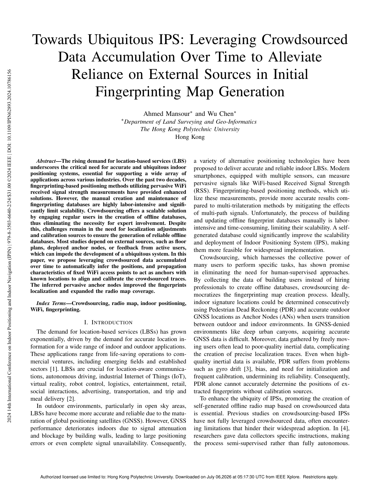
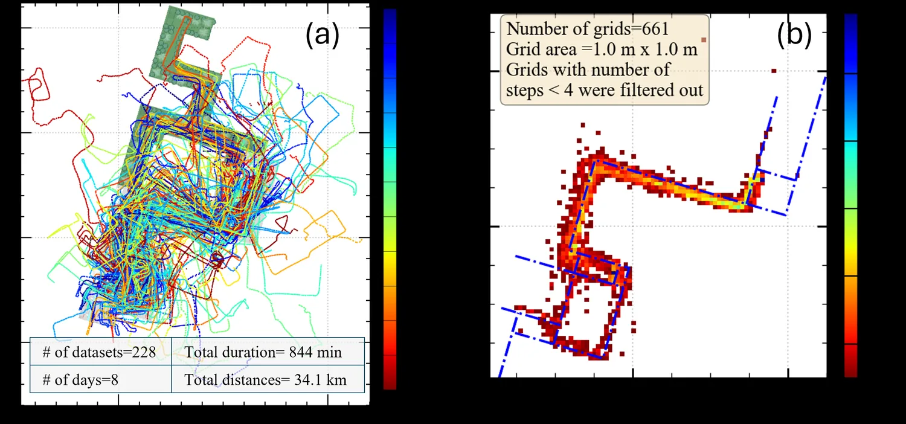
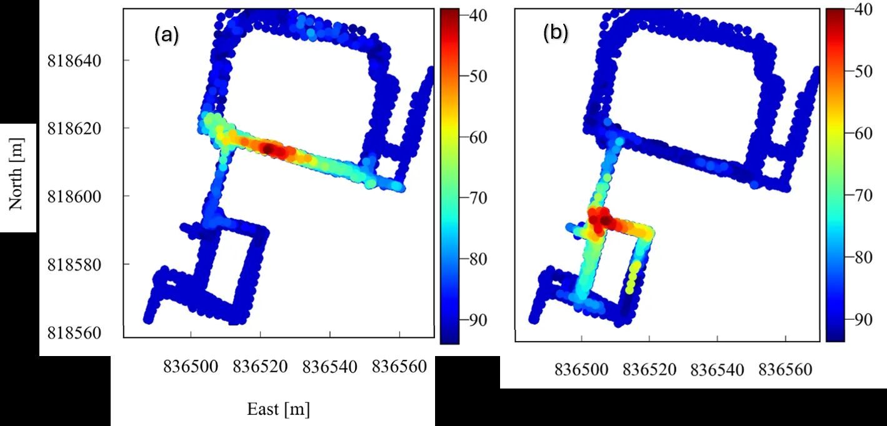
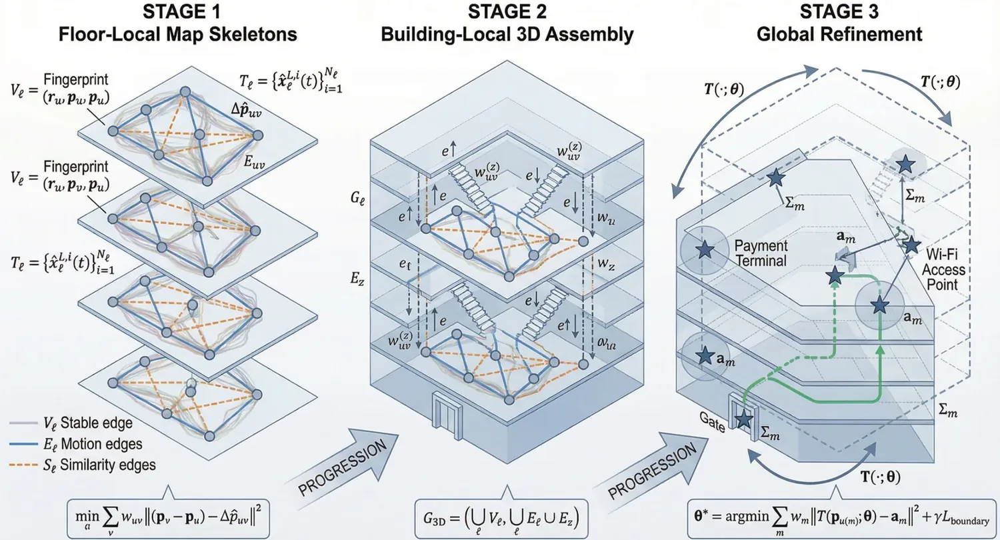

Towards Ubiquitous IPS: Leveraging Crowdsourced Data Accumulation Over Time to Alleviate Reliance on External Sources in Initial Fingerprinting Map Generation
Paper preview

Research story and quick reading guide
This paper addresses a specific but important stage in the IPS lifecycle: the initial generation of a fingerprinting map. Many Wi-Fi fingerprinting systems require an offline map before localization can begin. In practice, this often means using manual surveys, floor plans, external anchors, or user feedback. These sources can be useful, but they limit ubiquity because they are not always available and may require effort that does not scale to many buildings. The paper asks whether accumulated crowdsourced data can reduce this dependence over time.
The idea is that an IPS does not need to become fully mature on the first day. As users move through an environment and contribute measurements, the system can progressively learn more about fixed signal sources and spatial structure. The paper therefore treats time as a deployment resource. Instead of assuming that a complete radio map must exist before operation, it studies how repeated crowdsourced observations can help infer useful information and support the growth of the fingerprinting map.
The visual story is few initial measurements → repeated user traces → accumulated signal evidence → inferred anchors/map structure → improved IPS. This is a valuable way to think about scalable IPS because it shifts attention from one-time calibration to continuous accumulation. The more the environment is used, the richer the data become. This supports a practical pathway toward ubiquitous IPS in which the system improves as it is used.
The paper is particularly relevant to Wi-Fi fingerprinting because APs are usually fixed and pervasive. If their positions or propagation characteristics can be inferred from accumulated measurements, they can act as useful spatial references without requiring dedicated infrastructure. This makes the work relevant to autonomous radio-map generation, weakly labeled crowdsensing, and reduced reliance on external calibration aids.
The contribution is not only technical but also conceptual. It explains how IPS deployment can be staged: early data may be incomplete, but progressive accumulation can improve map quality and reduce uncertainty. This lifecycle view aligns with later research on self-healing radio maps and reliability-governed crowd-powered IPS.
This paper should be cited when discussing initial radio-map generation, crowdsourced data accumulation, Wi-Fi AP inference, self-deployable fingerprinting systems, and methods that aim to reduce dependence on floor plans, deployed anchors, or manual calibration during IPS startup.
Extended summary
This paper explores how accumulated crowdsourced measurements can infer fixed Wi-Fi access point properties and reduce reliance on external calibration sources during initial fingerprinting map generation.
Key visual explanation
These selected visuals help readers understand the method quickly before reading the full paper.



When to cite this paper
- initial radio map generation uses accumulated crowdsourced data
- Wi-Fi access points are inferred as pervasive anchors
- crowdsourced IPS reduces dependence on floor plans, beacons, or active feedback
- ubiquitous fingerprinting maps are constructed with minimal external resources
Keywords
crowdsourcingradio mapindoor positioningWi-Fi fingerprintingubiquitous IPSaccess point inference
Official link
https://doi.org/10.1109/IPIN62893.2024.10786156
For publisher-restricted articles, link to the DOI or an allowed accepted manuscript rather than uploading a restricted PDF.
BibTeX
@inproceedings{Mansour2024towards,
title = {Towards Ubiquitous IPS: Leveraging Crowdsourced Data Accumulation Over Time to Alleviate Reliance on External Sources in Initial Fingerprinting Map Generation},
author = {Ahmed Mansour and Wu Chen},
year = {2024},
journal = {International Conference on Indoor Positioning and Indoor Navigation (IPIN)},
doi = {10.1109/IPIN62893.2024.10786156},
}Research-area connection
This page is connected to the homepage research-area map so readers can move from the individual paper to the broader research program.